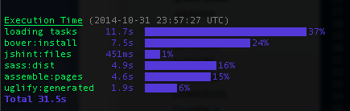

Blog
Hello World! Again!
Sun Oct 19 2014 01:00:00 GMT+0100 (BST)
First post on the internally revamped KopiJunkie.net!
The entire site's front end is now developed, generated using a modern front end development workflow. Just as a first post, here's a quick summary of my current workflow for my site:
- The site's project was startup up with the Yeoman Assemble generator
- HTML pages, content generated with Assemble
- CSS processed with Sass together with a glass of Bourbon
- I take my Bourbon Neat to lay down a responsive grid layout
- All the various JavaScript tasks to build the site, optimise images, etc. is done with Grunt work
- Bower handles the site's front end library dependencies
The code to put my site together is available at my Github repo for it.
My Development Setup - 2014 edition
Thu Mar 13 2014 00:00:00 GMT+0000 (GMT)
My front end development setup is an evolving organism, which changes, grows, evolves as time goes by based on what's going on in modern web development.
With that in mind, here's a run down of tools (that aren't browsers) that I use for my front end development workflow - most of which are available on both Macs and PCs...
- <a href="#sublime">Sublime Text</a>
- <a href="#livereload">LiveReload</a>
- <a href="#browserstack">BrowserStack</a>
- Version Control: <a href="#git">Git</a>
- GUI Client: <a href="#sourcetree">SourceTree</a>
- Diff Tool: <a href="#kdiff3">kdiff3</a>
- Design (rasters): <a href="#photoshop">Photoshop</a>
- Design (vectors): <a href="#sketch">Sketch</a> (Mac only)
<!--more-->
<h2 id="sublime"><a title="Sublime Text" href="http://www.sublimetext.com/">Sublime Text 2/3</a></h2>
I quite liked Notepad++ and up until last year I was quite happily still using it. Then I got introduced to Sublime Text 2. I thought it looked better out of the box design wise than Notepad++ and it could do what Notepad++ did, it just all looked nicer to me. Plus it was free too. It now feels like my life wouldn't be complete as a front end developer without Sublime Text in it. I'm now using Sublime Text 3, if only because it's available. I like how easily customisable it is, especially with Package Control installed. But what I really like are little shortcuts like easily selecting multiple instances of a word in a file using just `Ctrl+D`/`Cmd+D` once you learn and remember them. Plus I like that it's a got the IDE-ish functionality of a project explorer view on the sidebar.
In terms of customised preferences, I've got Sublime Text set up to do things like removing trailing whitespaces on saving a file by default. If you're as OCD about trailing whitespaces as I am, to do this, just stick `"trim_trailing_white_space_on_save": true` in the JSON formatted Settings - User file. Also, being from the "4 spaces for tab indentations" camp, I enforce this rule by having these 2 lines of configuration in for my user settings:
`"tab_size": 4,`
`"translate_tabs_to_spaces": true`
I personally think that with 4-space indentation code doesn't look not as cramped together as 2-space indentations. I actually can't remember who put the idea in my head for 4-space indentations, but I blame my C programming lecturer at Bristol for this as he was well known for "Neil's Golden Rules" in which this "rule" seems quite likely to have been in that list of rules.
I also have a few plugins installed also to help with my development workflow which I'll post as a blog post on its own. I've also got a custom Build System on my Sublime Text setup so that I can make a "Chrome Build", which really means I can view a HTML file in my Chrome browser by just pressing `Ctrl+B`/`Cmd+B`.
<h2 id="livereload"><a title="LiveReload" href="http://livereload.com/">LiveReload</a></h2>
A more recent discovery, made only earlier this year even, mainly because it works really well with Grunt.js and the Chrome browser plugin is LiveReload. To a certain extent I feel like this takes developer laziness to a whole new level, but when you've had to press the refresh button of your browser for the 1,000th time just to see some front end code change you'll appreciate how not needing to press the refresh button to see your changes, whether it's a new HTML element or a background colour change in the CSS as you save them is the best thing since sliced bread.
<h2 id="browserstack"><a href="http://www.browserstack.com/" title="BrowserStack">BrowserStack</a></h2>
Before the awesome thing that is BrowserStack came along, the best way to do reliable cross browser testing was to have a virtual machine or a dedicated machine running the OSes with the various browsers to test on, especially for IE and Safari. Maintaining these machines was a hassle...assuming you had the resources available to set them up. For the problem children that are the older IEs, there was/is IETester and the built-in IE developer tool, but those weren't the most reliable of testing environments. I find that for mobile browser testing nothing still beats testing on the actual device unfortunately. But otherwise, BrowserStack has got my back covered for a reasonable subscription fee.
<h2 id="git"><a title="Git" href="http://git-scm.com/">Git</a></h2>
My source code management system of choice is definitely Git, having used CVS (briefly at uni), SVN (my first workplace) and Git. I like the open, social collaboration that GitHub allows and encourages along with all the awesome 3rd party libraries, open source projects it already hosts. But I also like the option of being able to have a free private repo (or 2) on BitBucket for when I have something I just don't want to or cannot make public for some reason.
BTW, this may seem insane to some, especially if you're not comfortable with Git. But I had at one point, after mucking around with various GUI clients at work, forced myself to use the dreaded command line to do all my Git commits, branching, status checks to try and understand using Git better - I recommend this...it helps heaps! Except for diffs. I'm not THAT hard core. But if you're not like me and learning by doing or picking something apart isn't your thing, I highly recommend giving the Pro Git book book a read. In fact, keep it as your bible to all things Git. For those times you can't remember what's the difference between a merge and a rebase.
<h2 id="sourcetree"><a href="http://www.sourcetreeapp.com/" title="SourceTree">SourceTree</a></h2>
I've been told Git Tower is a pretty good Git client if you're on a Mac. But if you're on a Windows machine or just not willing to shell out for a Git client (like me), I think SourceTree's already pretty good. And it's not Git only - handy for if I ever have to work with a SVN or even Mercurial repo.
<h2 id="kdiff3"><a href="http://kdiff3.sourceforge.net/" title="kdiff3">kdiff3</a></h2>
Sometimes, especially in times of merge conflicts, I need to go through a file's differences between what's on the remote vs what's on my local copy. I like using kdiff3 for this as it has an auto merge function that does a pretty decent job and I can compare up to 3 files. But what I like most is that when I use it to resolve merge conflicts, I get a view of what's on the remote vs what's on my local vs what the merged result will look like. It goes through the conflicts line by line and ensures that I've gone through all the merge conflicts in the file before letting me save the file - in a resolved state.
<h2 id="photoshop"><a href="http://www.adobe.com/uk/products/photoshop.html" title="Photoshop">Photoshop</a></h2>
I've been using Adobe's Photoshop since Photoshop 7 and still do. But I actually started out using it to whip up graphics like forum signature banners, random artistically tweaked images or just a simple animated/static button as and when I need a graphical asset (like the vinyl records on my site's Last.fm data visualiser element) or just when inspiration strikes to make something digitally. When I started shifting from being a webmaster/web designer towards a front end developer, Photoshop was a way to design and/or pull graphical assets for a web site or a HTML emailer. I personally prefer just using Photoshop to have a rough idea of what I want to build, how it will look. But ultimately I prefer to design in the browser as I prefer to rely on CSS for styling up web things (and to be honest, being self taught when it comes to design, my style tends to be simple and minimalistic).
<h2 id="sketch"><a href="http://www.bohemiancoding.com/sketch/" title="Sketch">Sketch</a></h2>
These days, with responsive web design to accommodate all the many varied device resolutions I've started looking at vector based images. Still getting used to using it more over Photoshop or even Illustrator, as I've lately drifted more towards the application development side of front end development and my current workplace has a preference for Fireworks. But first impressions: I found Sketch pretty good for my workflow, especially when I worked on the Twickets iOS app. This is partly probably because Sketch was developed from the ground up with UI and web design in mind. With Photoshop, I had resize the images manually by working out what resolution the "standard" image should be and what the @2x (double) version should be. Sketch has a 1-step option to also generate the @2x (or @1x, half size) version when exporting a graphical asset. It also helps a lot for the pocket that Sketch is pretty affordable compared to Photoshop or Illustrator (up until Adobe's subscription based Creative Cloud service came along anyway). Love it.
My Front End Development Setup - 2014 edition
Thu Mar 13 2014 00:00:00 GMT+0000 (GMT)
Recently I plugged in a Grunt plugin that handily displays a summary of the time taken by a project's Grunt build tasks. Before this the team had only been aware of the overall time taken. Especially with LiveReload running, waiting for the page to reload with our changes.
We suspected the Compass compilation was taking "a long time". But we didn't know for certain how long and if that was the only problem area. With time-grunt we could now see a nice breakdown of each task's time taken allowing us to know what to focus our performance improvements on.
Setting it up was easy enough. Though it is slightly different from the usual Grunt tasks. Just install it using NPM and save it into the project's `package.json` as a development dependency with `npm install time-grunt --save-dev` in the project's front end root directory. Then in your project's `Gruntfile.js` add `time-grunt` as a required module and pass it the Grunt instance with `require("time-grunt")(grunt);`

Now when you run Grunt again, at the end of your Grunt output there will be a nice time chart broken down by tasks reporting how long each task took with a total run time also. Sweet!
title: "Hello World! Again!"
posted: 2014-10-19
tags: ["development", "workflow"]
blog: true
First post on the internally revamped KopiJunkie.net!
The entire site's front end is now developed, generated using a modern front end development workflow. Just as a first post, here's a quick summary of my current workflow for my site:
- The site's project was startup up with the Yeoman Assemble generator
- HTML pages, content generated with Assemble
- CSS processed with Sass together with a glass of Bourbon
- I take my Bourbon Neat to lay down a responsive grid layout
- All the various JavaScript tasks to build the site, optimise images, etc. is done with Grunt work
- Bower handles the site's front end library dependencies
The code to put my site together is available at my Github repo for it.
title: "My Front End Development Setup - 2014 edition"
posted: 2014-03-13
tags: [ "development", "workflow", "browserstack", "design", "git", "kdiff3", "livereload", "photoshop", "sketch", "sublime text" ]
blog: true
Recently I plugged in a Grunt plugin that handily displays a summary of the time taken by a project's Grunt build tasks. Before this the team had only been aware of the overall time taken. Especially with LiveReload running, waiting for the page to reload with our changes.
We suspected the Compass compilation was taking "a long time". But we didn't know for certain how long and if that was the only problem area. With time-grunt we could now see a nice breakdown of each task's time taken allowing us to know what to focus our performance improvements on.
Setting it up was easy enough. Though it is slightly different from the usual Grunt tasks. Just install it using NPM and save it into the project's package.json as a development dependency with npm install time-grunt --save-dev in the project's front end root directory. Then in your project's Gruntfile.js add time-grunt as a required module and pass it the Grunt instance with require("time-grunt")(grunt);
Now when you run Grunt again, at the end of your Grunt output there will be a nice time chart broken down by tasks reporting how long each task took with a total run time also. Sweet!
title: "My Development Setup - 2014 edition"
posted: 2014-03-13
tags: [ "development", "workflow", "browserstack", "design", "git", "kdiff3", "livereload", "photoshop", "sketch", "sublime text" ]
blog: true
My front end development setup is an evolving organism, which changes, grows, evolves as time goes by based on what's going on in modern web development.
With that in mind, here's a run down of tools (that aren't browsers) that I use for my front end development workflow - most of which are available on both Macs and PCs...
- Sublime Text
- LiveReload
- BrowserStack
- Version Control: Git
- GUI Client: SourceTree
- Diff Tool: kdiff3
- Design (rasters): Photoshop
- Design (vectors): Sketch (Mac only)
I quite liked Notepad++ and up until last year I was quite happily still using it. Then I got introduced to Sublime Text 2. I thought it looked better out of the box design wise than Notepad++ and it could do what Notepad++ did, it just all looked nicer to me. Plus it was free too. It now feels like my life wouldn't be complete as a front end developer without Sublime Text in it. I'm now using Sublime Text 3, if only because it's available. I like how easily customisable it is, especially with Package Control installed. But what I really like are little shortcuts like easily selecting multiple instances of a word in a file using just
Ctrl+D/Cmd+D once you learn and remember them. Plus I like that it's a got the IDE-ish functionality of a project explorer view on the sidebar.
In terms of customised preferences, I've got Sublime Text set up to do things like removing trailing whitespaces on saving a file by default. If you're as OCD about trailing whitespaces as I am, to do this, just stick "trim_trailing_white_space_on_save": true in the JSON formatted Settings - User file. Also, being from the "4 spaces for tab indentations" camp, I enforce this rule by having these 2 lines of configuration in for my user settings:
`"tab_size": 4,`
`"translate_tabs_to_spaces": true`
I personally think that with 4-space indentation code doesn't look not as cramped together as 2-space indentations. I actually can't remember who put the idea in my head for 4-space indentations, but I blame my C programming lecturer at Bristol for this as he was well known for "Neil's Golden Rules" in which this "rule" seems quite likely to have been in that list of rules.
I also have a few plugins installed also to help with my development workflow which I'll post as a blog post on its own. I've also got a custom Build System on my Sublime Text setup so that I can make a "Chrome Build", which really means I can view a HTML file in my Chrome browser by just pressing Ctrl+B/Cmd+B.
A more recent discovery, made only earlier this year even, mainly because it works really well with Grunt.js and the Chrome browser plugin is LiveReload. To a certain extent I feel like this takes developer laziness to a whole new level, but when you've had to press the refresh button of your browser for the 1,000th time just to see some front end code change you'll appreciate how not needing to press the refresh button to see your changes, whether it's a new HTML element or a background colour change in the CSS as you save them is the best thing since sliced bread.
Before the awesome thing that is BrowserStack came along, the best way to do reliable cross browser testing was to have a virtual machine or a dedicated machine running the OSes with the various browsers to test on, especially for IE and Safari. Maintaining these machines was a hassle...assuming you had the resources available to set them up. For the problem children that are the older IEs, there was/is IETester and the built-in IE developer tool, but those weren't the most reliable of testing environments. I find that for mobile browser testing nothing still beats testing on the actual device unfortunately. But otherwise, BrowserStack has got my back covered for a reasonable subscription fee.
My source code management system of choice is definitely Git, having used CVS (briefly at uni), SVN (my first workplace) and Git. I like the open, social collaboration that GitHub allows and encourages along with all the awesome 3rd party libraries, open source projects it already hosts. But I also like the option of being able to have a free private repo (or 2) on BitBucket for when I have something I just don't want to or cannot make public for some reason.
BTW, this may seem insane to some, especially if you're not comfortable with Git. But I had at one point, after mucking around with various GUI clients at work, forced myself to use the dreaded command line to do all my Git commits, branching, status checks to try and understand using Git better - I recommend this...it helps heaps! Except for diffs. I'm not THAT hard core. But if you're not like me and learning by doing or picking something apart isn't your thing, I highly recommend giving the Pro Git book book a read. In fact, keep it as your bible to all things Git. For those times you can't remember what's the difference between a merge and a rebase.
I've been told Git Tower is a pretty good Git client if you're on a Mac. But if you're on a Windows machine or just not willing to shell out for a Git client (like me), I think SourceTree's already pretty good. And it's not Git only - handy for if I ever have to work with a SVN or even Mercurial repo.
Sometimes, especially in times of merge conflicts, I need to go through a file's differences between what's on the remote vs what's on my local copy. I like using kdiff3 for this as it has an auto merge function that does a pretty decent job and I can compare up to 3 files. But what I like most is that when I use it to resolve merge conflicts, I get a view of what's on the remote vs what's on my local vs what the merged result will look like. It goes through the conflicts line by line and ensures that I've gone through all the merge conflicts in the file before letting me save the file - in a resolved state.
I've been using Adobe's Photoshop since Photoshop 7 and still do. But I actually started out using it to whip up graphics like forum signature banners, random artistically tweaked images or just a simple animated/static button as and when I need a graphical asset (like the vinyl records on my site's Last.fm data visualiser element) or just when inspiration strikes to make something digitally. When I started shifting from being a webmaster/web designer towards a front end developer, Photoshop was a way to design and/or pull graphical assets for a web site or a HTML emailer. I personally prefer just using Photoshop to have a rough idea of what I want to build, how it will look. But ultimately I prefer to design in the browser as I prefer to rely on CSS for styling up web things (and to be honest, being self taught when it comes to design, my style tends to be simple and minimalistic).
These days, with responsive web design to accommodate all the many varied device resolutions I've started looking at vector based images. Still getting used to using it more over Photoshop or even Illustrator, as I've lately drifted more towards the application development side of front end development and my current workplace has a preference for Fireworks. But first impressions: I found Sketch pretty good for my workflow, especially when I worked on the Twickets iOS app. This is partly probably because Sketch was developed from the ground up with UI and web design in mind. With Photoshop, I had resize the images manually by working out what resolution the "standard" image should be and what the @2x (double) version should be. Sketch has a 1-step option to also generate the @2x (or @1x, half size) version when exporting a graphical asset. It also helps a lot for the pocket that Sketch is pretty affordable compared to Photoshop or Illustrator (up until Adobe's subscription based Creative Cloud service came along anyway). Love it.
{kind=link}
{kind=link}